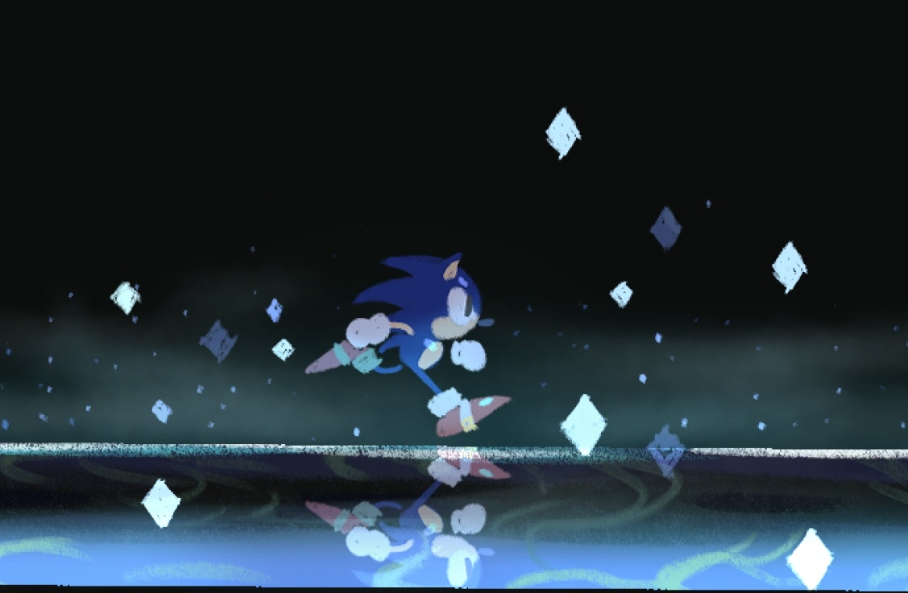
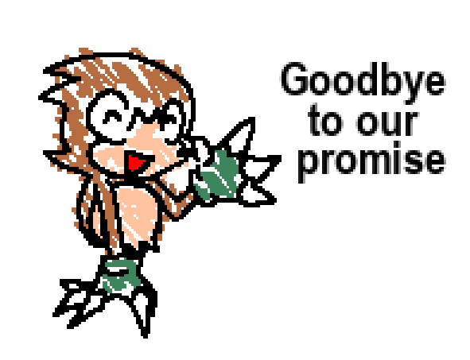
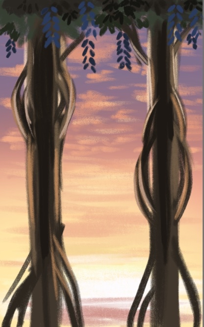
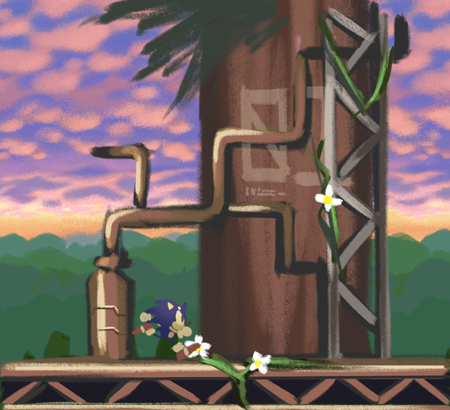
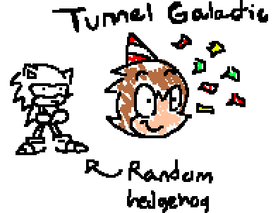

- A haiku, about someone
Hello there! Welcome to the first Sonic Galactic Newsfeed! We're going to try shifting our deeper progress updates on the game to this website...after all, we made it in a rush for the 2nd Demo, so we might as well use it, right?!
Besides, this will make it easier to cross post for us. It's hard to post between all our sites and share the same content, with all of them having different video limits, upload rules, and etc... so here's an easier solution to that. Who knows, as we continue to post these down the line, maybe we'll even come up with a better way to label these updates! But either way, to get into the main meat...
Wow! It got here so soon! Has it really been 9 years?! No way, no way!
It feels like just yesterday that this game used to be just starting off in Game Maker 8, with thousands of bugs accumulating, and having older names for stages such as Disco Dance and Smoggy Swamp. Actually, that's not really true. It feels extremely ancient.
Through all the messy older builds (one that we released for you all to play on this year's April Fools) and ridiculous developments we went through up to this point, it's amazing to see that Galactic stands that way it does to this day!
For all of you who have always stuck it out for this project, whether on the team, just a bystander, or anything...we truly thank you for all the years of your support!
It's amazing to know how much this project impacts others...and we hope to continue to deliver on that front.
Now, is there anything to show in celebration for those 9 years?!?
...
...
Well, not quite. Maybe the 10th anniversary will be better. There's nothing we can show that would realistically feel fitting of the anniversary. But what we can do, at the very least, is announce something.

Goodbye to our promise...because we're changing things up a little. To start off, anyone aware of what has been echoed since the Mesozoic era should know that Demo 3 was stated to not be happening, and that the next time you see Galactic, it would be the finished game. That's still the case. The Demo 3 part, that is.
We've decided that it might be wise to rethink our strategy a little. Obviously, development is going at its pace for this project, which is fine, seeing as a lot of us developers are busy with many obligations. But it means that a lot of you will wait a long time before seeing Galactic again. With the huge task that is delivering the final game to you all, it wouldn't even be close to Demo 2's wait between Demo 1, which was already nearly 5 years!
So, we are deciding that we'll be doing a newer sort of release. As soon as Umbrella Rushwinds Act 1 is a finished and playable level, we will be releasing a build that lets you play that stage. That's the name of the 4th Zone, by the way. Some of you have maybe even heard of it before, when playing a certain racing game. We've had a long history with this zone's concept, maybe we'll get to talk more about it another time.

But isn't that exciting?! More Galactic content!! And you won't wait 5 extra years for it!!
It's worth noting that this also won't be the only sort of "snapshot" that we end up doing. In general, you all can look forward to playing more mini teasers of Galactic, if truly desired. Waiting for the full game is fine, too!

Well, as you can see, we're rather busy. We've had our fair share of work that we've shown you, and our fair share of things that we haven't. We still have our Blooming Ridge Zone preview to showcase to you all as promised for 25K Followers, but we've been taking time to make it feel more like the level itself is fully in motion, rather than just 20 seconds of footage. We hope you can hold out for longer!
Since we're doing things by the batch for the time being, it means that you can expect more consistent news and progress towards Galactic! Of course, this isn't easy for us to bring to life without others, and the sooner this game finishes, the better for everyone, right? So, that's a little bit of why we had opened our programmer positions up again, to get the ball rolling (once more). You can likely expect that to happen for more positions again down the road, sprite artists, animators, even musicians...
But for now, these links to application forums will be here, in case anyone would like to hop on the wave early.
Programmers: Apply Here
Sprite Artists: Apply Here
But either way...Umbrella Rushwinds...more Galactic content, and a secret third thing...! It's happening!! Hopefully you all look forward to it!
